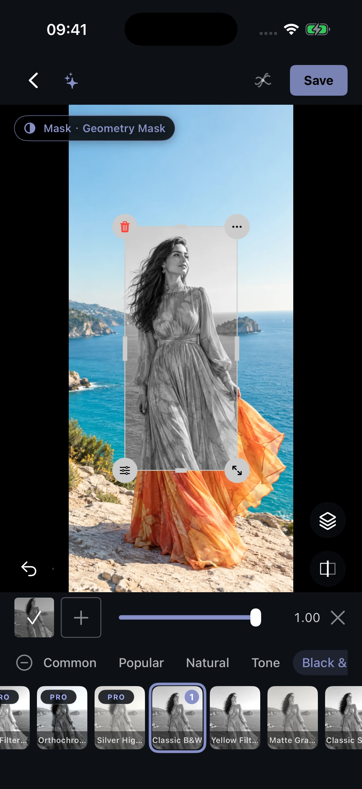
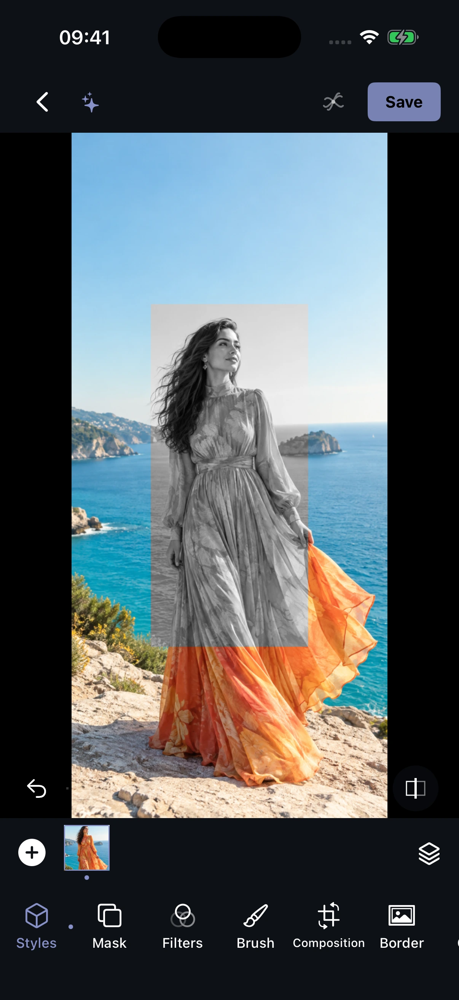

A wider view of the whole.
Compare light, color, and texture on a larger screen.
Photo editor for Apple platforms
Brand imagery · AI-created
Find direction with filters. Place change with masks. Return to the editor and keep refining. Here, the sea keeps its color while one area changes.


Move the slider to compare the original and the actual export
The sample photo is AI-created. Local monochrome was edited and exported as a JPEG in Awaking.


Real App interfaces from this editing case
Find the overall character through color and light.
Place change where it belongs. Keep the rest of the image.
Review and organize local effects. Keep every choice clear.
Portrait light. Architectural form. Color on a rainy street. Feel the image first, then decide where it should go.


AI-created visual inspiration, not Awaking exports.
iPhone, iPad, and Apple silicon Mac. Choose the device at hand to bring the overall direction and local detail together.
Compare light, color, and texture on a larger screen.

Move between the photo and its tools. Focus on the area that needs change.

Return to color and local detail to complete the photo in front of you.
Choose a photo from your device. Begin locally.
Find direction with filters, color, composition, lighting, and effects.
Use masks and brushes to place attention where it belongs.
Review layers, keep refining, and save the image locally.
No account. No automatic uploads of photos, masks, edits, or exports. No ads, tracking, or third-party analytics. Keep your attention on the image.
Import, make essential edits, undo and redo, and save a watermark-free standard JPEG. No account needed.
Unlock selected advanced filters, mask templates, effects, and high-quality export. Apple shows current products and prices.
iPhone / iPad: iOS / iPadOS 16 or later. Mac: Apple silicon with macOS 13 or later.
Available on the App Store
Download Awaking, opens the App Store in a new window